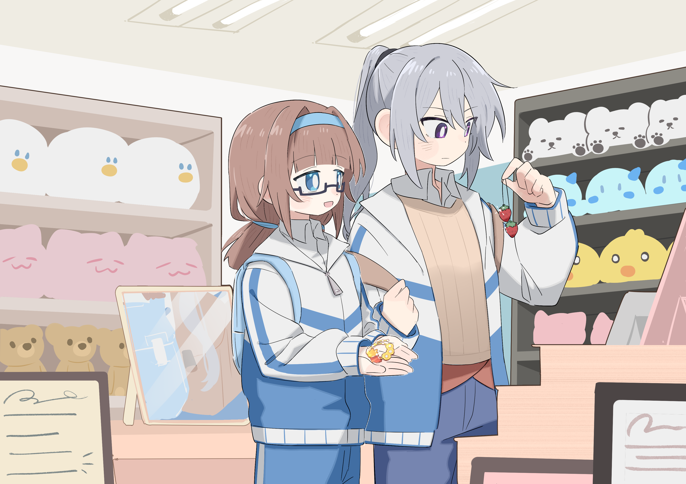
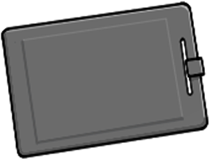
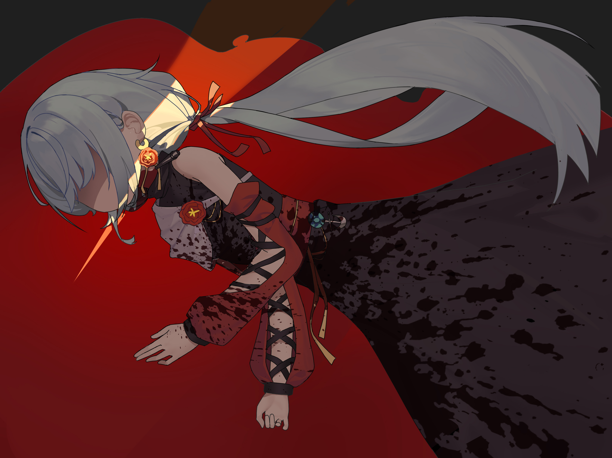

01
极恶之善
找到“幕后黑手”，解决眼下存在的危险
从规则来看，丧尸似乎并不是互联梦机制的一部分。那么，会是某个玩家的武器导致了丧尸的出现吗？
如果答案是“是”，这个玩家，又会是谁？

试玩版 下载试玩版 点击前往下载本游戏为设定系推理作品，包含恐怖与死亡描写，并涉及自杀、自伤、心理疾病及精神创伤等敏感内容，部分情节可能引发不适。请根据自身状态谨慎选择游玩，如感到不适，请立即暂停和退出。
故事完全架空、虚构，与现实中的任何个人、团体、组织或机构均无关联，亦不影射任何现实人物或事件。角色的言行、立场及价值观不代表作者的观点。涉及心理疾病的描写不代表所有患者的真实经历。相关设定与情节服务于虚构叙事，不应被视为专业医学观点或对真实临床情况的准确呈现。
本作是带有痕量设定系推理要素的百合向视觉小说。试玩版共两个主视角角色，正式版共四个主视角角色。
为主视角角色选择不同的选项，可以见证不同的结局。
平凡的高中生陆月，于某日睡下之后，在奇怪的梦境世界醒来。自称“引导员”的鸢尾告诉她，这里是一个类似于联机游戏的梦，即“互联梦”。“玩家”们每天都会在固定时间进入梦境，并且需要在梦境的世界里寻找特定的物资。另外，互联梦中还有丧尸在按相对固定的路线游荡。——在互联梦里死去的人，在现实中会自杀。
遇到的第一个人居然是自己同校的学妹，明浅白。来到“据点”39L的门口，两人刚推开门，丧尸就冲了进来。千钧一发之际，两人被站在楼梯口的蒋雨心所救。
来到互联梦的蒋雨心异常镇静，并且极其适应这里的环境。不过，她是一个充满谜团的人，言行举止也时常有些脱线。她有什么难言之隐？
39L的玩家们在寻找物资时结识了40L的玩家们。奇怪的氛围在40L氤氲着。据她们所说，在丧尸刚刚出现时，她们曾经历过恐怖的事。大家小心翼翼地行动，想要在互联梦中活下去。
然而，有一些人正在互联梦里做异常的行为。行事孤僻的天才顾一经常独自行动，不知道正在这里调查些什么。高三学生许甘宁则在现实里忙碌着，并且似乎早就知道互联梦的存在。
而40L的夏青悠和徐子衿，则像是一对侦探和助手，执着于破解互联梦中的每一个谜题。怪人还有很多。不如说，这里的人，或多或少都有些奇怪。
另外，40L的沈玉珏找到蒋雨心，告诉她一件出乎意料的事……

从规则来看，丧尸似乎并不是互联梦机制的一部分。那么，会是某个玩家的武器导致了丧尸的出现吗？
如果答案是“是”，这个玩家，又会是谁？

由于种种原因，血腥的谋杀剧在这天然的暴风雪山庄中上演。作为指挥者的陆月／蒋雨心不得不成为侦探。
这会不会才是互联梦这个“游戏”原本的样子……

互联梦到底是什么、基于何、从何时开始、是谁召开的、为什么被召开，主办者又是如何做到的？
顾一说她要在这里找到□□□□□□□。也祝愿蒋雨心漫长的焦虑得以因谜题被解答而画上句点。
互联梦的引导员“鸢尾”。终结的花海。两个□□的葬礼。
其实我们并无不同。